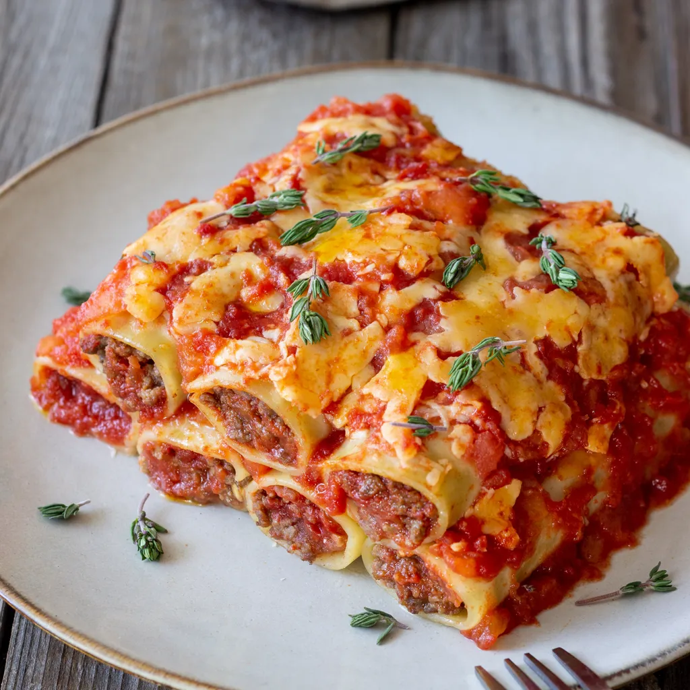

Cannelloni

Description
Cannelloni are large pasta tubes filled with a savory mixture of ricotta, spinach, and sometimes ground meat, then covered with tomato sauce and creamy béchamel. Topped with grated cheese and baked until bubbly, cannelloni offers a deliciously rich and cheesy experience.
Ingredients
- Cannelloni tubes
- Ricotta, spinach, optional ground meat
- Egg, onion, garlic
- Tomato sauce, béchamel sauce
- Parmesan, mozzarella
- Salt, pepper, nutmeg
Steps
- Prepare the Filling: Sauté onion and garlic, add ground meat if using, and cook. Mix with ricotta, spinach, and egg. Season well.
- Fill Cannelloni: Spoon filling into pasta tubes or use a piping bag.
- Assemble: Pour some tomato sauce in the baking dish, arrange filled cannelloni on top, cover with more tomato and béchamel sauce, then sprinkle with mozzarella and Parmesan.
- Bake: Bake at 180°C (350°F) for 30-35 minutes until bubbly and golden.